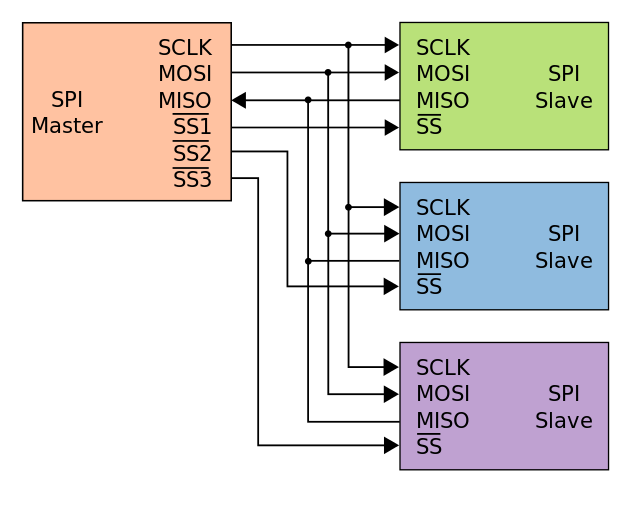

SPI这个接口其实在我玩Arduino的时候就在用了，不过当时就是个调库侠，啥规定原理都不知道只管#include <SPI.h>就好了，现在玩STM32就不一样了，不知道SPI规范到底是个啥就凉凉。
SPI的接线
SPI的接线比IIC要多一点，规定在主设备和从设备上各要有四个接线：
- SCLK：时钟信号，主设备的SCLK（可以是一个数字口）要接到从设备的SCLK上，以达成关于通信速度的共识
- MOSI：主设备输出，从设备输入，主设备的MOSI（可以是一个数字口）要接到从设备的MISO1上
- MISO：主设备输入，从设备输出，主设备的MISO（可以是一个数字口）要接到从设备的MOSI1上
- SS（其实多称CS）：选择哪一个从设备接收和发送信息用的接线，由主设备的一个数字口连接到从设备，一般来说给低电平代表这个从设备“被选中”来和主设备通信。
由于SS的存在，主设备的SCLK、MOSI和MISO可以复用，如图，SCLK，MOSI和MISO分别只占用一个引脚，这些引脚上穿输的数据由哪一个从设备接收则由相应的SS决定。

SPI的操作
假设一个主设备已经连接了一个或多个从设备，那么可以用下面的方法来和一个从设备通信。
在SCLK上给出一个时钟信号来配置时钟，通常是时钟频率是几个MHz
把对应的SS置为低电平
（如果从设备需要一段时间来准备好要发送给主设备的数据，主设备要等待那么长的一段时间）
在每个时钟周期内
- 主设备会发送一个位给从设备（通过给MOSI线高电平来发送1，给低电平来发送0），这一步常常在时钟信号的下降沿发生
- 同时从设备会发送一个位给主设备（同理是使用MISO线来接收这个得到的值），这一步常常在时钟信号的上升沿发生
这两部分构成了一个全双工数据传输，即使你并不想主设备给从设备发送任何信息而只是想获得从设备所发送的信息，或反之，只想向从设备中写入信息，这个全双工数据传输仍然是全双工的。
传输通常会使用到给定字长的两个移位寄存器，一个在主设备中，一个在从设备中; 它们以虚拟环形拓扑连接。 数据通常先移出最大的位。 在时钟边沿，主机和从机均移出一位，然后在传输线上输出给对方。 在下一个时钟沿，每个接收器都从传输线接受该位，并设置为移位寄存器的新的最低有效位。 在完成这样一个移出-移入的周期后，主机和从机就交换寄存器中的一位。 ——维基百科
SPI代码示例
代码来自维基百科。
1 | /* |
总的来说SPI是相当方便的一个通信协议，相比IIC我更愿意使用SPI一些。
1. 板子上标记一般是MOSI接MISO，MISO接MOSI，这和上面的图片不太一样，注意甄别，其实不行反过来试试看就行。 ↩